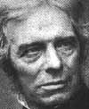

| "Spark of Life"
From "Stranger than Science" by Frank Edwards © 1959, 1987 Did an obscure amateur scientist discover the spark of life? Did Andrew Crosse accidentally stumble upon a mixture of chemicals and electricity which produced living things from a lifeless compound? If he did not, then just what did he accomplish? The record of his work is clear, only the enigma of the results remains to plague science. The neighbors of Andrew Crosse regarded him as more devil than man. They did not understand the bright flashes that lighted his laboratory windows at night when he was tinkering with his crude electrical devices. Not only was he dreaded and shunned as "the thunder and lightning man," but he was denounced as an atheist, a blasphemer, and a Frankenstein who had best be put in chains for the common safety. Andrew Crosse minded his own business, it is true, but his was a very strange business for the early 1800's. And one of his experiments remains a very strange business to this day. Andrew was an enthusiastic amateur experimenter in the new field of electricity. Out of touch with others in the same work, he labored under the double handicap of not knowing what had already been done - and of not understanding what he was doing himself. Yet it may have been this very lack of knowledge which led him to undertake the experiments which were to inscribe his name, however faintly, in the annals of science. He decided to induce the development of artificial crystals by subjecting chemicals to prolonged exposure to weak electrical currents. Andrew mixed up some silicate of potash and hydrochloric acid and into this he dropped a fistsized chunk of oxide of iron. By inducing the current from a small battery to trickle through the solution to the oxide of iron, he hoped to bring about the growth of artificial crystals of silica. Having arranged this combination of chemicals and current, Andrew set it aside and went back to his favorite pastime of studying the spark-gap - the flashes which alarmed his neighbors. Did he accidentally stumble upon an arrangement which created life from inorganic matter? In a paper which he wrote for the London Electrical Society in that same year of 1837, Andrew set down this account of his experience. He wrote "On the fourteenth day after the commencement of this experiment, I observed through a small magnifying lens a few small whitish specks clustered around the middle of the electrified stone. Four days later these specks had doubled in size and had struck out six or eight fine filaments around each speck . . . the filaments longer than the hemisphere from which they projected. "On the 26th day of the experiment, the objects assumed the form of perfect insects, standing erect on the bristles which they were growing. Although I regarded this as most unusual I attached no singular significance to it until two days later, the 28th day of the experiment, when the magnifying lens showed that these things were moving their legs. I must say now that I was quite astonished. After a few more days they detached themselves from the stone and moved about through the caustic acid solution. "In the course of a few weeks more than a hundred of them made their appearance on the oxide of iron. Under a microscope I examined them and found that the smaller ones had six legs, the larger ones had eight. Others who have examined them pronounced them to be of the genus acari, but some say they are an entirely new species. "I have never ventured an opinion on the cause of their birth for the reason that I have never been able to form one. I thought they might have been airborne creatures that had drifted into the liquid and prospered, but later experiments with closed vessels, in which the ingredients had been purified by baking in the oven, produced identical creatures; therefore, I suggest that they must originate in the electrified liquid by some process unknown to me." Andrew Crosse realized that he was walking a tightrope before the top scientists of his day. He was describing an experience foreign to their accepted understanding and therefore he was inviting ridicule. He did not have long to wait. Cries of fraud and hoax engulfed him. He and his alleged insects were denounced as nothing more than humbugs. Amid all the furor that his announcement had created, Crosse stood alone and helpless. Even other scientists who had duplicated his tests with similar results kept their silence. All but one. That voice was raised in his defense and it was such a powerful voice that none dared challenge it; for it belonged to the great Michael Faraday. At last Crosse had found his champion.
 Crosse never claimed to have discovered anything. He was merely reporting what had happened. After the attacks upon him subsided, he retired to his home in the Quontock hills for many more happy years among his test tubes and batteries. Although he spent his long life as a humble searcher after scientific truths, the contribution for which he is remembered is the controversy over his acari - unwanted then, and unexplained to this day.
Tom Bearden comments (finalized and slightly updated in March 2001). It is difficult to make an understandable comment on the business of
life, because presently scientists have not the foggiest notion what
mind, being, life, death, time, etc. are. For that matter, they don't
really know what matter and energy and charge are either. In the scheme
of things, our modern "science" is only about three hundred
years old, and that's a snap of the finger in even just the existence of
this world. Much of modern science still considers the mind as a
"meat computer", or just the physical electrodynamic activity
of the brain, etc. Materialism has not died, even though quantum
mechanics essentially wiped it out decades ago, and the old concept of
"mass" as something hard, permanent, and "material"
has also long since vanished. One is referred to the works of Max Jammer
to see what the present view of "mass" is. Also, without
looking up the references again, recent experiments with quarks and
gluons wound up with experiments in which it mattered not a whit whether
one considered the mass as zero or nonzero. Nature, it seems, does not
have to play by our usual "either-or" rules. In physics, of
course, this is the duality problem, which to this day has not been
resolved because attempts to resolve it have applied Aristotelian logic
-- and there is no solution to the problem of "opposites being
identical" in that logic, which forbids that very thing by
authoritarianism. Quite some time ago, we worked out the nature of mind, and the
mind-matter coupling mechanism (which is engineerable). We did that in
pursuit of the mechanisms in the KGB/Russian psychoenergetics weapon
work. I had the last of a 3-part article published in
"Explore",
dealing briefly with mind control technology both the way it is probably
done clandestinely in this country and how it is done by the
KGB/Russians. I'm still trying to get the proper parties to believe it;
not much progress. However, some very neat information has been released
on the Internet that very probably reveals why officially there is no
interest. It's because three decades ago some of our "spooky
folks" found (in deep hypnosis experiments) that humans are
inordinately sensitive to extremely low-level EM signals and fields.
Even though no detection or sensation may rise to the conscious level,
the unconscious (which is totally conscious, just massively parallel
rather than serial) does sense these signals. Voila! It would appear
that "very deep black" parts of the community probably
developed quite good mind influence and mind and behavior control or
interference using techniques adapted from that work. The reader must
always remember that just because the overt government does not
know something or have something, does not at all mean that the covert
government doesn't have it. And even in the covert government, there are
layers within layers. So there, even when the upper levels do not have
something, it still does not mean that the deeper levels do not have it.
The problem with the best knowledge and technology, when unknown to the
upper covert levels and the overt level, is that it is then quite likely
to be subverted into the deepest levels, which may have their own
agendas and may not report to the duly elected U.S. government at all.
Indeed, such levels often assume that the President himself does not
have a "need to know". And sadly, the physicists do not seem to have even realized it!. Not a single paper or text in the West, e.g., illustrates an EM wave in spacetime prior to its interaction with a unit point charge. E.g., simply check a fine editorial by Romer. Romer is the editor of American Journal of Physics, and we are referring to Robert H. Romer, "Heat is not a noun," American Journal of Physics, 69(2), Feb. 2001, p. 107-109; and specifically to his end note #24, p. 109. Romer takes to task "…that dreadful diagram purporting to show the electric and magnetic fields of a plane wave, as a function of position (and/or time?) that besmirch the pages of almost every introductory book. …it is a horrible diagram. 'Misleading' would be too kind a word; 'wrong' is more accurate." "…perhaps then, for historical interest, [we should] find out how that diagram came to contaminate our literature in the first place." But in general physicists continue to charge on, confusing effect as
cause. Electrodynamics, e.g., is particularly guilty of greatly
confusing the two, which is really what is preventing a successful and
engineerable unified field theory. Further, contemporary classical
electrodynamicists do not calculate either the field or the potential;
instead they calculate the reaction cross section of each,
interacting with a unit point charge assumed out of nowhere. In short,
they calculate how much is diverged from the actual field or potential,
and then call that "little extracted part" the field or
potential! Again, they mistake the causal entity existing before the
interaction with the effect entity existing after the interaction. Well,
after the interaction has occurred, that result is the effect,
not the cause prior to interaction. Physics has this so
hopelessly snarled that it will require 50 to 100 years before the
journals and physics societies are likely to even realize it and admit
it, and then it will require them another 50 years to straighten it out
and purge this huge non sequitur from physics theory and modeling. To see that the effect can generate the cause, just consider the
normal "forward time" observation process having to operate in
a "time-reversed" process. You see, not only must we shift
observers from frame to frame, but we must also be able to shift them
from forward-time (of some conveniently chosen outside reference
observer) to reversed time (of that same reference observer). Since ambient spacetime may be modeled as a special kind of "scalar" potential with intense energy density, it then decomposes into a series of bidirectional EM longitudinal wavepairs, a la Whittaker 1903, except one must use impulse waves so as to include the time dynamics part of spacetime, rather than forcefield 3-space type waves. The entire thing -- mind, life, matter, fields, waves, spacetime, etc. -- then becomes structurable and directly engineerable by novel EM means (such as the O(3) higher symmetry electrodynamics pioneered by Evans and Vigier). Longitudinal EM wave technology is the key to developing such mind-body coupling mechanisms and engineering of them, at all. One only gets the time-polarized EM wave technology after the LPW technology has "done its thing" -- the time-polarized technology is far and away the most powerful and primary. Also, low frequency photons have far more energy than high frequency photons, if one includes the time component, since time is spatial energy compressed by c-squared and has the same energy density as mass. Time-energy (highly compressed spatial energy, compressed by c-squared but in the time domain rather than in 3-space) and spatial energy in the photon are canonical. As the frequency of the photon decreases, its spatial energy decreases also with the decreasing frequency. However, the time-energy component increases, and its compacted energy increases as the square of the time-component expressed in seconds. Hence at lower frequencies the total energy (sum of spatial energy and time energy) in the photon increases. Indeed, if one wishes to engineer gravitational effects, it is the low frequency photons (low ELF) that are important, because they have far and away more "spacetime curving energy" than high frequency photons such as gamma rays. At least eight nations on earth now have longitudinal EM wave
technology weapons to one extent or another. Several of them -- hostile
to one another -- are using Western Australia as a convenient nearly
uninhabited target range. Understand, one does not have to agree with this model! That is one's
own decision. We are just pointing out that, if we correct many of the
errors known to be in the presently used models, this is the kind of
reality that readily emerges. We get a physics that is not just an
"inert" physics, but a living physics where literally the
entire universe is "alive" in very special manner. By the way, recent experiments in cloning are beginning to bear out the fallacy that exact electrochemical processes produce the same end physical results, particularly when the persistence of the created forms is examined. E.g., cloned rats may live half their lives in apparently normalcy—then suddenly grow greatly obese and die. Many other anomalies are being uncovered in this fashion. The reason is quite simple: We have some diagrams showing that one may introduce an additional "engine" to the pumping of a diseased or damaged cell (or a healthy one for that matter), and in the time-reversal process then induced, the "time-reversal" process will be diverted from the original trajectory. In short, the original full state will not be recovered.
This, we pointed out, is a second generation technology to be developed, where a disease or disorder must be treated and where also there was never a normal past state anyway. A case in point is birth defects, etc. Eventually, if the technology ever is allowed to be funded and developed, even those kinds of medical conditions will be treatable and curable. The point is that in cloning, one does not use the normal sperm cell and egg, without abnormal disruption. There is indeed an abnormal disruption -- and every such physical action or change and dynamics certainly involves an additional set of engines. In short, with present methods the cloned entity also has introduced into the equation an additional "engine". In the fertilization process, there is quite a jump back to a "time-reversed" situation (fertilization is the beginning of a physical embodiment, hence from two parts of an embodiment already in being, there is a rather dramatic "jump backwards"). The "normal" backwards jump of that kind is a normal fertilization of the egg by the sperm. Any change to that procedure, represents the insertion of an abnormal engine to be processed in that same "jump back". For the methods being used, it appears that the abnormal engines are sufficiently weak that, in the cloned animal, some time must expire in its lifetime before the impact of that little constant deviation from normal grows to become suddenly significant. Indeed, all "living forms" are materialized from energy,
but from both matter-energy and time-energy and the dynamics of the two.
Natural processes include fertilization, birth, etc., but there is no
technical reason whatsoever that the process cannot be direct and even
directly engineerable. In this "expanded energy" sense, mind
energy and dynamics can be engineered as well as body matter energy and
dynamics. Not only can one have a "material entity" or thing
communicating with another "material entity" or thing, but one
can also have a "mental thing" (time-domain thing with no
spatial existence) communicating with a "material entity or
thing" with only spatial existence, and vice versa. There is indeed
a coupling two-way mechanism
Any technological
civilization that has not solved the fundamental "self-killer"
problem of the technological species, must and will self-destruct. This
follows from simple servo-mechanism theory, as we have previously
pointed out. The KGB is working on a "solution" that is far
along: engineer the entire human species quantum potential so that the
human species can be turned into an "antlike" species, which
of course would be the "ideal" communist state, in the minds
of many Communist party theoreticians. Our guys haven't even got started
on engineering the quantum potential yet. They have not yet even
discovered the big ball park, let alone the big ball game. |

 For the skeptic, here is a statement made in 1997 by Dr. William
Cohen, then Secretary of Defense:
For the skeptic, here is a statement made in 1997 by Dr. William
Cohen, then Secretary of Defense: